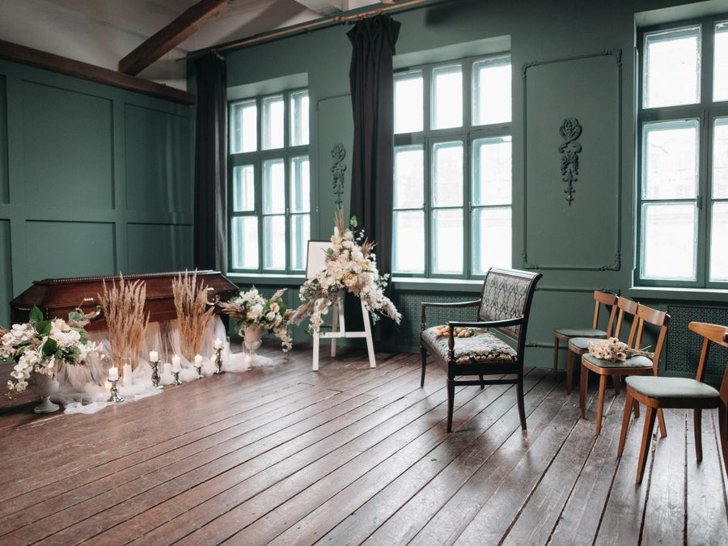
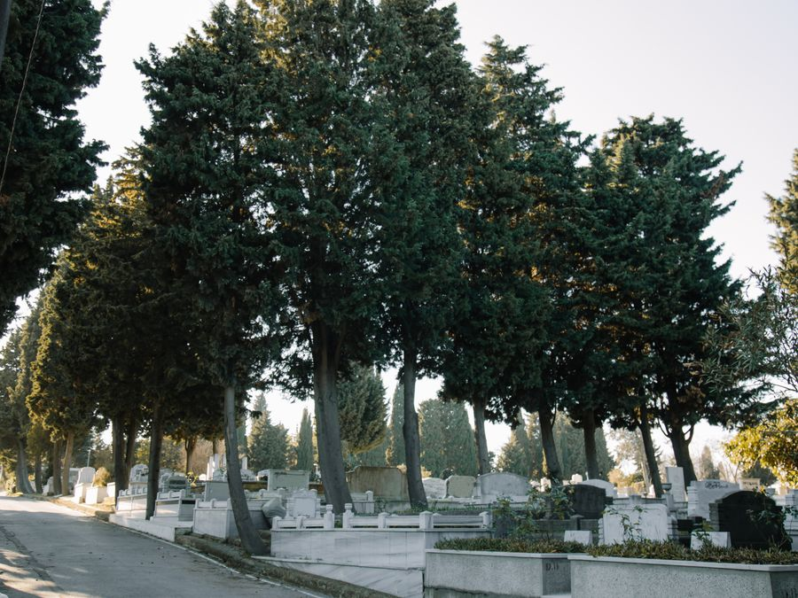

El más solicitado
01
Velatorio
Salones climatizados y privados, acondicionados con calidez para que la familia pueda despedirse con intimidad y sosiego, en el tiempo que necesite.
Acompañamiento con respeto y serenidad
Cuando la vida cambia en un instante, estamos aquí para cuidar de los suyos con discreción, calidez y una atención que no descansa. Disponibles las 24 horas del día, todos los días.
Un compromiso de cuidado
Cada familia vive el duelo de una manera distinta. Por eso no ofrecemos protocolos: ofrecemos acompañamiento. Nuestro equipo humano, formado para servir, atiende cada detalle con delicadeza para que usted pueda dedicarse a lo verdaderamente importante: estar junto a los suyos.
— La familia Luz de Esperanza
Nuestros servicios
Servicios diseñados con sensibilidad, desde el primer llamado hasta la última despedida.

El más solicitadoSalones climatizados y privados, acondicionados con calidez para que la familia pueda despedirse con intimidad y sosiego, en el tiempo que necesite.
Proceso digno y respetuoso, con acompañamiento paso a paso. Coordinamos cada detalle y le entregamos las cenizas con la consideración que su familia merece.

Gestionamos el entierro en el cementerio de su preferencia: traslado, preparación y todos los arreglos necesarios para una ceremonia serena y respetuosa.
Repatriación y traslados entre provincias con total coordinación logística, documentación y custodia, para que su ser querido regrese a casa sin contratiempos.
Le orientamos en certificados de defunción, seguros, pólizas y demás gestiones ante instituciones, para que pueda avanzar en paz y sin dolores de cabeza.
24/7
No importa la hora ni el día. Un asesor estará listo para escucharle y acompañarle en el primer paso.
Hablar con un asesoraños sirviendo a las familias de Santo Domingo
Por qué elegirnos
Un ser humano responde cada llamada, a cualquier hora. Nunca le dejará esperando una máquina en el peor momento.
Un equipo empático acompaña a la familia en todo el proceso, con palabras justas y silencios respetuosos.
Espacios amplios, frescos y cuidados, pensados para velatorios prolongados con total comodidad y privacidad.
Prepárese con anticipación y deje a sus seres queridos la tranquilidad de un proceso ya resuelto, sin sorpresas.
Testimonios
En el momento más difícil de nuestras vidas, ellos estuvieron allí. Su calidez y paciencia hicieron la despedida menos pesada.
Nos guiaron en cada trámite con una amabilidad inesperada. Sentimos que nunca estuvimos solos, ni de noche ni de día.
Un salón hermoso y sereno. Se nota el cariño con el que preparan cada detalle y el respeto con el que tratan a nuestros seres queridos.
Atención permanente
Estamos disponibles ahora mismo, a cualquier hora del día o de la noche.
Llamar o escribir ahora +1 829 723 7899Ubicación